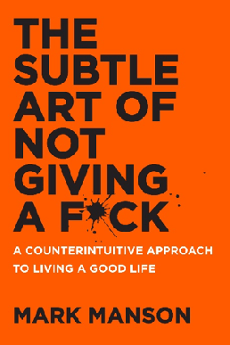

The book review
The Subtle Art of Not Giving a Fuck
A direct, unconventional guide to choosing what matters and letting go of the rest.
Overall review
Mark Manson offers a blunt, conversational take on self-help that puts priorities and personal responsibility ahead of constant positivity. The book's strongest idea is simple: time and attention are limited, so choose carefully what deserves them.
Review in detail
Short chapters mix anecdotes, practical reflections, and challenges to familiar success advice. The irreverent voice keeps the book moving, though its deliberately provocative style will not suit everyone. Its central reminders about values and accepting life's difficulties are more lasting than its shock-value title.
Who should read it
Readers looking for an informal prompt to rethink their priorities may find it useful, especially if they prefer candid writing to traditional motivational language.